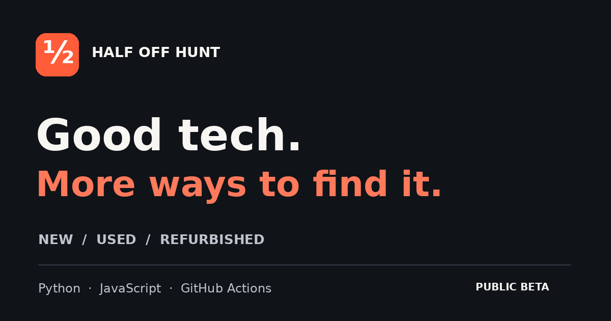

Deal discovery
Search and filter the scanner’s qualifying markdowns. Save deal IDs locally and share a filtered link.
Explore deals →Development showcase · Public beta
An Australian deal-discovery project combining a static website, scheduled Python scanners and personal RSS monitoring.

Search and filter the scanner’s qualifying markdowns. Save deal IDs locally and share a filtered link.
Explore deals →Official retailer links across laptops, consoles, phones and refurbished devices, with condition checks.
Used and refurbished →A separate RSS watcher with product-interest rules and condition labels, plus a localhost dashboard.
Personal alerts →Confirmed AUD prices and available variants, bounded concurrent scans, visible timestamps, protection against total scan failure, notification deduplication and asset versioning. Regression tests run before deployment.
This is an independent development project, not a retailer or checkout service. The main index scans a limited set of configured feeds; tech directories provide outbound retailer links rather than live prices. Community RSS items are not republished here. Retailer names identify destinations and do not imply endorsement.
The project supports owner-configured affiliate links with visible labels. Account approval, commissions and complete market coverage are not guaranteed. Product imagery in the main index comes from retailer feeds; this showcase artwork and copy were made for the project.
Copy the draft below, open LinkedIn, and review it in your own composer. Nothing is posted automatically.
For affiliate or correction requests, use the submission page. Please do not include account secrets in public submissions.